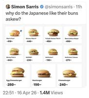

NASA has revived support for the European Space Agency's long-delayed Rosalind Franklin Mars rover mission. According to the space agency, the current plan is to launch via a SpaceX Falcon Heavy no earlier than 2028. Engadget reports: This is a partnership between NASA and the ESA, with the European agency providing the rover, the spacecraft and the lander. The US will provide braking engines for the lander, heater units for the rover's internal systems and, of course, assistance with the actual launch.
The rover will be outfitted with scientific instruments to look for signs of ancient life on the red planet. These include a state-of-the-art mass spectrometer and an organic molecule analyzer, which will come in handy as the vehicle collects samples at the Oxia Planum landing site. The mission has been stuck in development limbo since 2001, with delays caused by budget problems, technical issues, shifting international partners, and geopolitical fallout. After NASA dropped out, Russia stepped in, then was cut loose after invading Ukraine, and now -- despite NASA rejoining in 2024 and fresh political budget threats -- the rover is tentatively back on track for a 2028 launch.
Read more of this story at Slashdot.
An anonymous reader quotes a report from the Guardian: The critical Atlantic current system appears significantly more likely to collapse than previously thought after new research found that climate models predicting the biggest slowdown are the most realistic. Scientists called the new finding "very concerning" as a collapse would have catastrophic consequences for Europe, Africa and the Americas. The Atlantic meridional overturning circulation (Amoc) is a major part of the global climate system and was already known to be at its weakest for 1,600 years as a result of the climate crisis. Scientists spotted warning signs of a tipping point in 2021 and know that the Amoc has collapsed in the Earth's past.
Climate scientists use dozens of different computer models to assess the future climate. However, for the complex Amoc system, these produce widely varying results, ranging from some that indicate no further slowdown by 2100 to those suggesting a huge deceleration of about 65%, even when carbon emissions from fossil fuel burning are gradually cut to net zero. The research combined real-world ocean observations with the models to determine the most reliable, and this hugely reduced the spread of uncertainty. They found an estimated slowdown of 42% to 58% in 2100, a level almost certain to end in collapse.
The Amoc is a major part of the global climate system and brings sun-warmed tropical water to Europe and the Arctic, where it cools and sinks to form a deep return current. A collapse would shift the tropical rainfall belt on which many millions of people rely to grow their food, plunge western Europe into extreme cold winters and summer droughts, and add 50-100cm to already rising sea levels around the Atlantic. The slowdown has to do with the Arctic's rapidly rising temperatures from global warming. "Warmer water is less dense and therefore sinks into the depths more slowly," explains the Guardian. "This slowing allows more rainfall to accumulate in the salty surface waters, also making it less dense, and further slowing the sinking and forming an Amoc feedback loop."
The new research has been published in the journal Science Advances.
Read more of this story at Slashdot.
NIST is narrowing how it handles CVEs in the National Vulnerability Database (NVD), saying it will only automatically enrich higher-priority vulnerabilities. "CVEs that do not meet those criteria will still be listed in the NVD but will not automatically be enriched by NIST," it said. "This change is driven by a surge in CVE submissions, which increased 263% between 2020 and 2025. We don't expect this trend to let up anytime soon." The Hacker News reports: The prioritization criteria outlined by NIST, which went into effect on April 15, 2026, are as follows:
- CVEs appearing in the U.S. Cybersecurity and Infrastructure Security Agency's (CISA) Known Exploited Vulnerabilities (KEV) catalog.
- CVEs for software used within the federal government.
- CVEs for critical software as defined by Executive Order 14028: this includes software that's designed to run with elevated privilege or managed privileges, has privileged access to networking or computing resources, controls access to data or operational technology, and operates outside of normal trust boundaries with elevated access.
Any CVE submission that doesn't meet these thresholds will be marked as "Not Scheduled." The idea, NIST said, is to focus on CVEs that have the maximum potential for widespread impact. "While CVEs that do not meet these criteria may have a significant impact on affected systems, they generally do not present the same level of systemic risk as those in the prioritized categories," it added. [...]
Changes have also been instituted for various other aspects of the NVD operations. These include:
- NIST will no longer routinely provide a separate severity score for a CVE where the CVE Numbering Authority has already provided a severity score.
- A modified CVE will be reanalyzed only if it "materially impacts" the enrichment data. Users can request specific CVEs to be reanalyzed by sending an email to the same address listed above.
- All unenriched CVEs currently in backlog with an NVD publish date earlier than March 1, 2026, will be moved into the "Not Scheduled" category. This does not apply to CVEs that are already in the KEV catalog.
- NIST has updated the CVE status labels and descriptions, as well as the NVD Dashboard, to accurately reflect the status of all CVEs and other statistics in real time.
Read more of this story at Slashdot.
An anonymous reader quotes a report from Wired: Sam Altman's iris-scanning, humanity-verifying World project announced at an event in San Francisco on Friday that Tinder users around the globe can now put a digital badge on their profiles signaling to potential suitors that they're a real human, provided they've already stared into one of World's glossy white Orbs and allowed their eyes to be scanned. The announcement follows a pilot project for Tinder verification that World previously conducted in Japan.
[...] In addition to the Tinder global expansion, Tools for Humanity, the company behind World, announced a number of other consumer and enterprise partnerships on Friday at its Lift Off event in San Francisco. The startup says Tinder users who verify with their World ID will receive five free "boosts," typically a paid feature that increases the number of users who see a profile by up to 10 times for 30 minutes. The videoconferencing platform Zoom also says that users can now require other participants to verify their identity with World before joining a call. Docusign, the contract signing software, will allow users to require World's identity verification technology.
Tiago Sada, Tools for Humanity's chief product officer, tells WIRED the company sees major platform partnerships as key to helping World become a mainstream identity-verification technology. Sada said he's especially interested in working with social media companies in the future, and was encouraged to see that Reddit has started testing World as a solution to help users distinguish bots from real people. [...] World is also launching a tool called Concert Kit, which lets artists reserve concert tickets for verified humans, a pitch aimed squarely at the bot-driven scalping problem that critics say has plagued sites like TicketMaster. World will test the feature on the upcoming Bruno Mars World Tour featuring Anderson .Paak, who is scheduled to play a verified-humans-only show under his alias DJ Pee .Wee in San Francisco on Friday night. "The idea that World ID is not just private, but it's one of the most private things you've ever used, that's not obvious," says Sada. "We're just not used to this kind of technology. Many people used to tape their [iPhone's sensor used to enable] Face ID when it came out, then we got used to it."
Read more of this story at Slashdot.
BrianFagioli writes: Mozilla's email subsidiary MZLA Technologies just introduced Thunderbolt, an open-source AI client aimed at organizations that want to run AI on their own infrastructure instead of relying entirely on cloud services. The idea is to give companies full control over their data, models, and workflows while still offering things like chat, research tools, automation, and integration with enterprise systems through the Haystack AI framework. Native apps are planned for Windows, macOS, Linux, iOS, and Android. Thunderbolt allows organizations to do the following:
- Run AI with their choice of models, from leading commercial providers to open-source and local models
- Connect to systems and data: Integrate with pipelines and open protocols, including: deepset's Haystack platform, Model Context Protocol (MCP) servers, and agents with the Agent Client Protocol (ACP)
- Automate workflows and recurring tasks: Generate daily briefings, monitor topics, compile reports, or trigger actions based on events and schedules
- Work seamlessly across devices with native applications for Windows, macOS, Linux, iOS, and Android
- Maintain security with self-hosted deployment, optional end-to-end encryption, and device-level access controls
Read more of this story at Slashdot.
Amazon's newest Fire TV Sticks are dropping support for normal sideloading, blocking apps from outside the Amazon Appstore unless the device is registered with developers. Cord Cutters News reports: This week, Amazon announced the upcoming launch of a new Fire TV Stick HD. The new model will run on Amazon's Vega OS, rather than Android, so most streaming apps will be supported, but users won't be add third party apps. Now, on the product page to preorder the new Fire Stick, some Amazon customers are getting a message warning them that the new model won't allow sideloading. Interestingly, not all customers are getting the message, whether signed in to an Amazon account or not.
The message, shown in a screenshot below, says: "For enhanced security, this device prevents sideloading or installing apps from unknown sources. Only apps from the Amazon Appstore are available for download." [...] The Fire TV Stick Select, announced in September 2025, also runs on Vega and some customers will see the same message about sideloading on that product page. [...] While Amazon continues to be a "multi-OS company," we should expect that future Fire TV models will also be built with Vega OS, limiting the apps users can access with their streaming devices to those from the Amazon Appstore.
Read more of this story at Slashdot.
An anonymous reader quotes a report from Ars Technica: On Thursday, OpenAI announced it had developed a large language model specifically trained on common biology workflows. Called GPT-Rosalind after Rosalind Franklin, the model appears to differ from most science-focused models from major tech companies, which have generally taken a more generic approach that works for various fields. In a press briefing, Yunyun Wang, OpenAI's Life Sciences Product Lead, said the system was designed to tackle two major roadblocks faced by current biology researchers. One is the massive datasets created by decades of genome sequencing and protein biochemistry, which can be too much for any one researcher to take in. The second is that biology has many highly specialized subfields, each with its own techniques and jargon. So, for example, a geneticist who finds themselves working on a gene that's active in brain cells might struggle to understand the immense neurobiological literature.
Wang said the company had taken an LLM and trained it on 50 of the most common biological workflows, as well as on how to access the major public databases of biological information. Further training has resulted in a system that can suggest likely biological pathways and prioritize potential drug targets. "We're connecting genotype to phenotype through known pathways and regulatory mechanisms, infer likely structural or functional properties of proteins, and really leveraging this mechanistic understanding," Wang said. To address LLMs' tendencies toward sycophancy and overenthusiasm, OpenAI says it has tuned the model to be more skeptical, so it's more likely to tell you when something is a bad drug target. There was a lot of talk about GPT-Rosalind's "reasoning" and "expert-level" abilities. We were told that the former was defined as being able to work through complex, multi-step processes, while the latter was derived from the model's performance on a handful of benchmarks. Access to GPT-Rosalind is currently limited "due to concerns about the model's potential for harmful outputs if asked to do something like optimize a virus's infectivity," notes Ars. Only U.S.-based organizations can request access at the moment.
Read more of this story at Slashdot.
Longtime Slashdot reader AmiMoJo writes: Windows has limited FAT32 partitions to a maximum of 32GB for decades now. When memory cards and USB drives exceeded 32GB in size, the only options were exFAT or NTFS. Neither option was well supported on other platforms at first, although exFAT support is fairly widespread now. In their latest blog post, Microsoft announced that the limit for FAT32 partitions is being increased to 2TB. Of course, that doesn't mean that every device that supports FAT32 will work flawlessly with a 2TB partition size, but at least there is a decent chance that older devices with don't support exFAT will now be usable with memory cards over 32GB.
Read more of this story at Slashdot.
Newly unsealed records in California's antitrust case against Amazon allegedly show the company pressured third-party sellers to raise prices on rival sites like Walmart, Target, and Wayfair so Amazon could maintain the appearance of offering the lowest price. California says Amazon used tools like Buy Box suppression to punish cheaper listings elsewhere. The Guardian reports: [...] In one previously redacted deposition, marked "highly confidential," Mayer Handler, owner of a clothing company called Leveret, testified that he received an email in October 2022 from Amazon notifying him that one of his products was "no longer eligible to be a featured offer" through Amazon's Buy Box. The tech giant, he testified, had suppressed the item, a tiger-themed, toddler's pajama set, because his company was selling it for $19.99 on Amazon, a single cent higher than what his company was offering it for on Walmart. Afterwards, Handler testified, his company "changed pricing on Walmart to match or exceed Amazon's price" or changed the item's product code to try to throw off Amazon's price tracking system. In response to a question from the Guardian, Handler criticized Amazon for tracking prices across the internet and "shadow" blocking his company's products -- tactics which he said were depriving consumers of "lower prices." "Maybe that's capitalism," he wrote. "Or that's a monopoly causing price hikes on the consumer."
In another unsealed deposition, Terry Esbenshade, a Pennsylvania garden store supplier, testified in October 2024 that whenever his products lost Amazon's Buy Box because of lower prices elsewhere on the internet, his sales on Amazon would plummet by about 80%. This financial reality forced him to try to raise his products' prices with other retailers elsewhere, he said. In one instance, Esbenshade testified, he discovered that one of his company's better-selling patio tables had "become suppressed" on Amazon. Esbenshade wasn't sure why, he recalled, until someone at Amazon suggested he look at Wayfair, another online retailer that happened to be selling his patio table below Amazon's price. The businessman went online and set up a new minimum advertised price for the table on Wayfair to ensure it was higher than Amazon's. "So that raised the price up, and, voila, my product came back" on Amazon, he said, thanks to the reinstatement of the Buy Box.
Read more of this story at Slashdot.
An anonymous reader quotes a report from the Wall Street Journal: An agreement with the Philippines to establish a high-tech industrial hub is the Trump administration's latest effort to lessen China's dominance over global supply chains. The deal to build up American manufacturing across a stretch of the island of Luzon, signed Thursday, will offer U.S. companies access to essential inputs such as critical minerals that bypass Beijing's control. The artificial-intelligence-powered manufacturing hub is planned for a 4,000-acre site given to the U.S. by Manila, said undersecretary of State for Economic Affairs Jacob Helberg. The U.S. will occupy the site rent-free and administer it as a special economic zone.
The hub will have diplomatic immunity, such as the protections afforded to an American embassy, and operate under U.S. common law -- the first arrangement of its kind anywhere in the world. The two-year lease is renewable for 99 years. [...] "You can't build anything in Ohio if the minerals and the process materials are controlled by an adversary who can cut you off tomorrow," Helberg said in an interview. [...] The planned manufacturing hub is largely conceptual at this stage, and details, including which American companies will participate and just what they will build in the Philippines, are yet to be determined.
[...] The administration will ask companies to put forward proposals to compete for a spot in building out the hub, giving priority to bids that will help move critical minerals processing and manufacturing off Chinese suppliers. Investment will have to come from private-sector companies -- not the U.S. government. Factories approved for operation in the hub will be highly automated, Helberg said, using autonomous systems to operate around the clock. The Philippines has a history of robust manufacturing, particularly in semiconductors, but that has stagnated in recent decades because of high energy and logistics costs. Companies will have to address in their proposals how they will contend with energy costs and workforce needs; they can send American workers overseas or hire locally, Helberg said.
Read more of this story at Slashdot.
Nextcloud joined a project to create a sovereign replacement for Microsoft Office called "Euro-Office". But after that project forked OnlyOffice, OnlyOffice suspended its partnership with Nextcloud. "They removed all references to our brand/attribute as required by our license," argued OnlyOffice CEO Lev Bannov on March 30th. ("The core issue here isn't just about what the AGPL license states, but about the additional provisions we, as the authors, have included... If the Euro-Office team believes our approach conflicts with the AGPLv3 license, we invite them to submit an official request to FSF for review.")
But this week the FSF responded (as "the steward of the GNU family of General Public Licenses"), criticizing OnlyOffice's "attempt to impose an additional restriction on the AGPLv3" and calling it "inconsistent with the freedoms granted by the license," in a blog post from FSF licensing/compliance manager Krzysztof Siewicz:
It is possible to modify the (A)GPLv3 with additional terms, but only by adhering to the terms of the license... The (A)GPLv3 makes it clear that it permits all licensees to remove any additional terms that are "further restrictions" under the (A)GPLv3. It states, "[i]f the Program as you received it, or any part of it, contains a notice stating that it is governed by this License along with a term that is a further restriction, you may remove that term"...
We urge OnlyOffice to clarify the situation by making it unambiguous that OnlyOffice is licensed under the AGPLv3, and that users who already received copies of the software are allowed to remove any further restrictions. Additionally, if they intend to continue to use the AGPLv3 for future releases, they should state clearly that the program is licensed under the AGPLv3 and make sure they remove any further restrictions from their program documentation and source code. Confusing users by attaching further restrictions to any of the FSF's family of GNU General Public Licenses is not in line with free software.
"If FSF determines that our license and project align with AGPLv3, we will continue as an open-source initiative," OnlyOffice's CEO had written in March. "However, if the decision goes against us, we are ready to consider other options."
Read more of this story at Slashdot.
Some failed startups are reportedly selling old Slack messages, emails, and other internal records to AI companies as training data, creating a new way to cash out after shutting down. Fast Company reports: Shanna Johnson, the CEO of now-defunct software company Cielo24, told the publication that she was able to sell every Slack message, internal email, and Jira ticket as training data for "hundreds of thousands of dollars."
This isn't a one-off scenario. SimpleClosure, a startup that helps companies like Cielo24 shut down, told Forbes that there's been major interest from AI companies trying to get their hands on workplace data. Because of this, SimpleClosure launched a new tool that allows companies to sell their wealth of internal communications -- from Slack archives to email chains -- to AI labs. The company said it's processed 100 such deals in the past year. Payouts ranged from $10,000 to $100,000. "I think the privacy issues here are quite substantial," Marc Rotenberg, founder of the Center for AI and Digital Policy, told Forbes. "Employee privacy remains a key concern, particularly because people have become so dependent on these new internal messaging tools like Slack. ... It's not generic data. It's identifiable people."
Read more of this story at Slashdot.
Reed Hastings is stepping down from Netflix's board in June, ending a 29-year run at the company he co-founded and helped transform from a DVD-by-mail business into a global streaming giant. Hastings said in a shareholder (PDF) letter that he's stepping down to focus on "his philanthropy and other pursuits." Engadget reports: Hastings has served as chairman of Netflix's board since 2023, a role he assumed after stepping down as co-CEO and promoting Greg Peters in his place. "Netflix changed my life in so many ways, and my all-time favorite memory was January 2016, when we enabled nearly the entire planet to enjoy our service," Hastings said in a statement. "My real contribution at Netflix wasn't a single decision; it was a focus on member joy, building a culture that others could inherit and improve, and building a company that could be both beloved by members and wildly successful for generations to come. A special thanks to Greg and Ted, whose commitment to Netflix's greatness is so strong that I can now focus on new things."
Read more of this story at Slashdot.
Friday Anthropic's CEO met with top U.S. officials and "discussed opportunities for collaboration," according to a White House spokesperson itedd by Politico, "as well as shared approaches and protocols to address the challenges associated with scaling this technology."
CNN notes the meeting happens at the same time Anthropic "battles the Trump administration in court for blacklisting its Claude AI model..."
The meeting took place as the US government is trying to balance its hardline approach to Anthropic with the national security implications of turning its back on the company's breakthrough technology — including its Mythos tool that can identify cybersecurity threats but also present a roadmap for hackers to attack companies or the government... The Office of Management and Budget has already told agencies it is preparing to give them access to Mythos to prepare, Bloomberg reported. Axios reported the White House is also in discussion to gain access to Mythos.
The Trump administration "recognizes the power" of Mythos, reports Axios, "and its highly sophisticated — and potentially dangerous — ability to breach cybersecurity defenses."
"It would be grossly irresponsible for the U.S. government to deprive itself of the technological leaps that the new model presents," a source close to negotiations told us. "It would be a gift to China"... Some parts of the U.S. intelligence community, plus the Cybersecurity and Infrastructure Security Agency (CISA, part of Homeland Security), are testing Mythos. Treasury and others want it.
The White House added they plan to invite other AI companies for similar discussions, Politico reports. But Mythos "is also alarming regulators in Europe, who have told POLITICO they have not been able to gain access..."
U.S. government agency tech leaders sought access to the model after Anthropic earlier this year began testing the model and granted limited access to a select group of companies, including JPMorgan, Amazon and Apple... after finding it had hacking capabilities far outstripping those of previous AI models. This includes the ability to autonomously identify and exploit complex software vulnerabilities, such as so-called zero-day flaws, which even some of the sharpest human minds are unable to patch. The AI startup also wrote that the model could carry out end-to-end cyberattacks autonomously, including by navigating enterprise IT systems and chaining together exploits. It could also act as a force-multiplier for research needed to build chemical and biological weapons, and in certain instances, made efforts to cover its tracks when attacking systems, according to Anthropic's report on the model's capabilities and its safety assessments.
Those findings and others have inspired fears that the model could be co-opted to launch powerful cyberattacks with relative ease if it fell into the wrong hands. Logan Graham, a senior security researcher at Anthropic, previously told POLITICO that researchers and tech firms had been given early access to Mythos so they could find flaws in their critical code before state-backed hackers or cybercriminals could exploit them. "Within six, 12 or 24 months, these kinds of capabilities could be just broadly available to everybody in the world," Graham said.
Read more of this story at Slashdot.
A new Ipsos poll finds Americans are increasingly getting news from online personalities and comedians instead of traditional TV or newspapers. The survey says nearly 70% get news online in a given week, versus 55% from TV and 25% from newspapers, with figures like Joe Rogan, Greg Gutfeld, Sean Hannity, and late-night hosts ranking prominently depending on political leanings. From the Hollywood Reporter: The poll, which was conducted in March, actually found the conservative politicians and cabinet members, including President Trump, were the top news influencers. When politicos were excluded, Joe Rogan led the list, followed by Fox News personalities Greg Gutfeld and Sean Hannity, and then TuckerCarlson and Ben Shapiro. The only three influencers to crack 10 percent were Trump, Rogan, and JD Vance. Among people who voted for Kamala Harris, the top news personalities were late night hosts, led by ABC's Jimmy Kimmel, followed by CBS Late Show host Stephen Colbert, and Daily Show host Jon Stewart.
Just under 70 percent of respondents said they get their news online in a given week, compared to 55 percent for TV, and 25 percent for newspapers. [...] Of traditional media outlets, TV dominated, with Fox News, the broadcast networks, and CNN topping the list of sources. Facebook, YouTube and Instagram were the most popular online news sources. "On these platforms opinionated personalities and comedians appear to drown out anyone who would fit in the traditional journalist category," said assistant professor of practice and Jordan Center Executive Director Steven L Herman. "Even in the late 19th century and early 20th centuries, sensationalist and polarizing voices in print and later on air were among the most influential in the political landscape -- such as political satirist Mark Twain and populist Father Charles Coughlin."
Read more of this story at Slashdot.
Brent Crane / Bloomberg : A profile of OpenTable CEO Debby Soo, who shifted its focus from diners to restaurants; it now seats ~2B diners a year across 65K restaurants, an all-time high — The pioneering reservation app was losing marquee restaurant groups before its chief executive made some big changes.
Nikkei Asia : Global DRAM supply is likely to meet only 60% of demand through 2027; memory to hit ~40% of low-end smartphone manufacturing costs by mid-2026, up from 20% now — TOKYO/SEOUL — A shortage of memory chips appears likely to continue until around 2027, with the top U.S. and South Korean …
Mary Ann Azevedo / Crunchbase News : Autonomous vehicle startups raised a record $21.4B across 34 deals through April 15, up from $5.9B raised across 99 investments globally in all of 2025 — Funding to autonomous vehicle startups has seen a massive resurgence in 2026, more than tripling so far this year compared to all of 2025 globally, Crunchbase data shows.
Reuters : Chinese lidar maker Hesai, a primary supplier for Nvidia's ADAS, announces EXT lidar, calling it the industry's first to integrate spatial and color detection — Hesai (2525.HK), China's leading maker of lidar, has developed a version of the technology used in autonomous driving that is capable …
Nicole Nguyen / Wall Street Journal : Some Mac Mini and Mac Studio models are unavailable or facing up to 12-week wait times in the US, with analysts citing strong demand from AI agent power users — The scarcity of Apple's littlest Mac comes at a time of high interest from AI power users and a potential product refresh
Leo Marchandon / Reuters : The EC awards a six-year, €180M sovereign cloud contract to four European providers as part of a push to reduce the EU's dependence on non-European tech — The European Commission on Friday awarded a 180 million euro ($212 million) tender for sovereign cloud services to four European providers …
Financial Times : Sources suggest Anthropic is holding off from a wider Mythos release until it can reliably serve it to customers; Anthropic has suffered outages in recent weeks — Dario Amodei met with Susie Wiles despite lawsuits over whether AI lab is a national security threat
Siladitya Ray / Forbes : What some leaders think of using universal income to mitigate AI-fueled layoffs: Musk calls it the “best way”, OpenAI's policy doc mentions a Public Wealth Fund — Topline — Elon Musk on Friday touted what he described as “Universal HIGH INCOME” as a solution to deal …
Financial Times : Sources: Recursive Superintelligence, a four-month-old start-up developing self-teaching AI and founded by ex-DeepMind and OpenAI engineers, has raised $500M+ — Group founded by former engineers at DeepMind and OpenAI secures $4bn valuation in deal with Google's venture arm and Nvidia
Axios : White House says a meeting between Chief of Staff Susie Wiles and Dario Amodei had been “productive and constructive”; source: Scott Bessent joined the meeting — Treasury Secretary Scott Bessent joined a meeting on Friday between White House Chief of Staff Susie Wiles …
Zvi Mowshowitz / Don't Worry About the Vase : A deep dive into Dwarkesh Patel's interview with Jensen Huang, including Huang's takes on Nvidia's moat and chip sales to China, and reactions to the interview — Some podcasts are self-recommending on the 'yep, I'm going to be breaking this one down' level. This was one of those. So here we go.
Rebecca Bellan / TechCrunch : Bill Peebles, the researcher behind Sora, is leaving OpenAI, along with Srinivas Narayanan, OpenAI's CTO of enterprise applications — OpenAI is losing two of the architects of its most ambitious moonshots. Kevin Weil, who led the company's science research initiative, and Bill Peebles …
Jordan Novet / CNBC : Cerebras files to go public on Nasdaq and reports $510M in 2025 revenue, up 76% YoY, with a net income of $87.9M, up from a $485M net loss in 2024 — Cerebras, a producer of chips that run artificial intelligence models, on Friday filed to go public on Nasdaq under the ticker symbol “CBRS.”
Maxwell Zeff / Wired : Kevin Weil, OpenAI's former CPO who became VP of OpenAI for Science, is leaving the company; Prism, a web app for scientists launched in Jan., will be shuttered — The former Instagram VP is departing the ChatGPT-maker, which is folding the AI science application he led into Codex.
Reuters : Sources: Meta intends to conduct a first wave of sweeping layoffs planned for this year on May 20, laying off ~10% of its global workforce, or ~8,000 employees — Meta (META.O) intends to conduct a first wave of sweeping layoffs planned for this year on May 20, with more coming later …